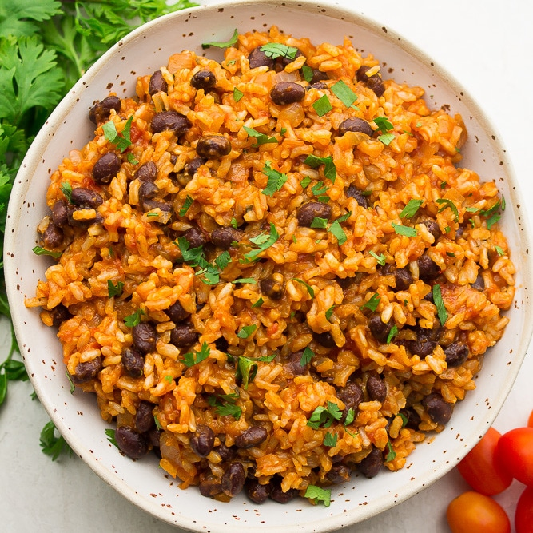

Rice and Beans

Description
This rice and beans recipe is absolutely positively fantastic, provided you've never
had rice and beans before. I am by no means a cook, so be warned: I'm trying. Not my best, but I'm trying.
This recipe is a poor attempt to bring together the smokiness and heartiness we've all come to love in traditional
rice and beans. If you're looking to make authentic rice and beans, keep looking. This recipe is for those
who claim they want to make rice and beans, but really have no intention of doing so.
Ingredients
Ok, so here's what you'll need:
- Rice
- Beans
- Butter
- 1 Large Onion
- Like 10 cloves of garlic
- Some Scallions
- Too much Cumin
- Adobo
- Salt
- Something to make the rice orange-ish
Steps
Oh boy, you're actually doing this?
- Chop Onion and Garlic and Scallions into small bits, but not too small.
- Turn your burner on medium, and melt Butter in a large sautee pan.
- Add chopped veggies to sautee pan.
- Reevaluate your reasoning behind continuing.
- Meanwhile, it would probably be a good idea to cook the rice.
- Once veggies are giving off that strong "I know what I'm doing" aroma, add beans to sautee pan.
- Suddenly remember that this recipe should for sure include some kind of Tomatoes lolol
- Add Cumin, Salt, Adobo, and whatever makes the rice orange to bean and veggie mixture.
- When rice is tender, add that too the sautee pan too, right? Done, I think.
- Enjoy?
Home